AVIF Chroma Subsampling
Tool Versions
| Tool | Version |
|---|---|
| ssimulacra2 | available |
| butteraugli | available |
| ffmpeg | 7.1.3-0+deb13u1 |
| cjpeg | 2.1.5 |
| cwebp | 1.5.0 |
| avifenc | 1.3.0 |
| cjxl | 0.11.2 |
Contents
- SSIMULACRA2 vs Bytes Per Pixel
- BUTTERAUGLI vs Bytes Per Pixel
- PSNR vs Bytes Per Pixel
- SSIM vs Bytes Per Pixel
- SSIMULACRA2 vs Quality
- BUTTERAUGLI vs Quality
- PSNR vs Quality
- SSIM vs Quality
- BYTES PER SSIMULACRA2 PER PIXEL vs Quality
- BYTES PER BUTTERAUGLI PER PIXEL vs Quality
- BYTES PER PSNR PER PIXEL vs Quality
- BYTES PER SSIM PER PIXEL vs Quality
- BYTES PER PIXEL vs Quality
- ENCODING TIME PER PIXEL vs Quality
- Visual Comparison
Data Downloads
SSIMULACRA2 vs Bytes Per Pixel
BUTTERAUGLI vs Bytes Per Pixel
PSNR vs Bytes Per Pixel
SSIM vs Bytes Per Pixel
SSIMULACRA2 vs Quality
BUTTERAUGLI vs Quality
PSNR vs Quality
SSIM vs Quality
BYTES PER SSIMULACRA2 PER PIXEL vs Quality
BYTES PER BUTTERAUGLI PER PIXEL vs Quality
BYTES PER PSNR PER PIXEL vs Quality
BYTES PER SSIM PER PIXEL vs Quality
BYTES PER PIXEL vs Quality
ENCODING TIME PER PIXEL vs Quality
Visual Comparison
Side-by-side comparison of encoding artifacts on the most representative image fragments, selected automatically from the dataset using Butteraugli spatial distortion analysis.
Average Distortion Analysis
Identifies the image and fragment that are consistently most challenging across all parameter combinations. The distortion map below shows the average Butteraugli distortion across every encoding variant.
Selected Image & Fragment Location
The dashed rectangle marks the fragment used for the comparisons below.
Aggregated Distortion Map (Mean)
Average per-pixel Butteraugli distortion across all encoding variants. Darker regions suffered more distortion on average; the selected fragment targets the worst area.
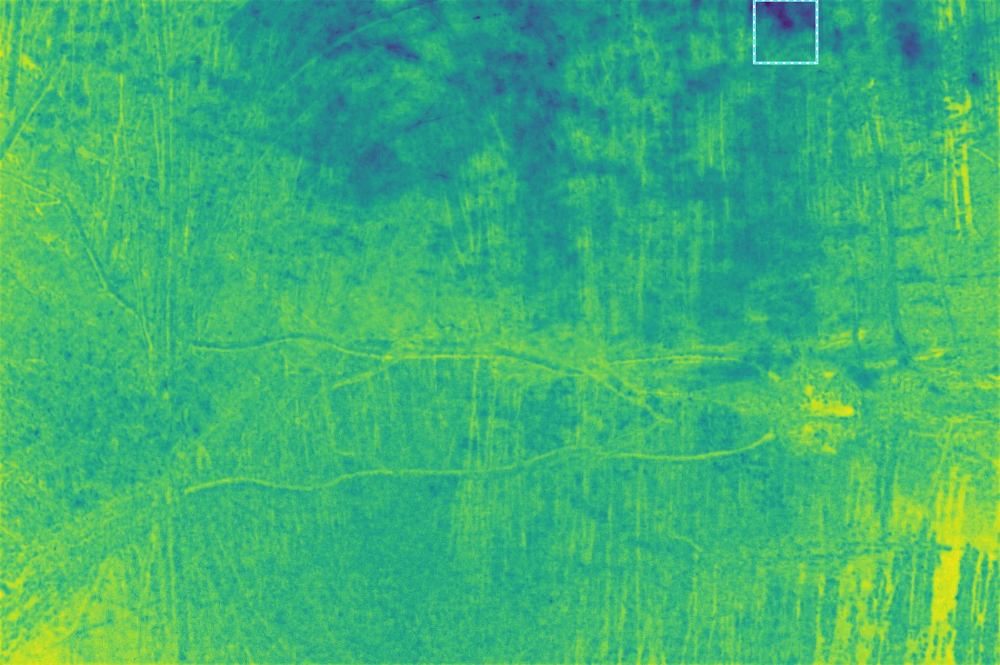
Fragment Comparison
Nearest-neighbour 3× zoom of the selected fragment, comparing original against each encoding variant. Images are served losslessly to preserve pixel fidelity.
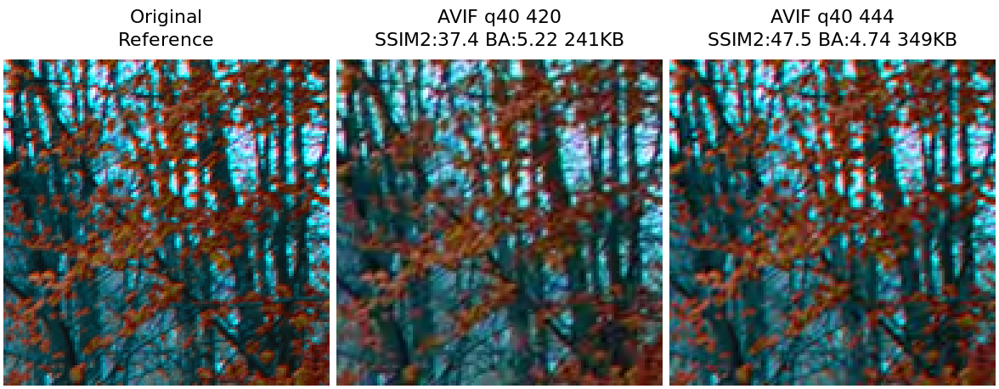
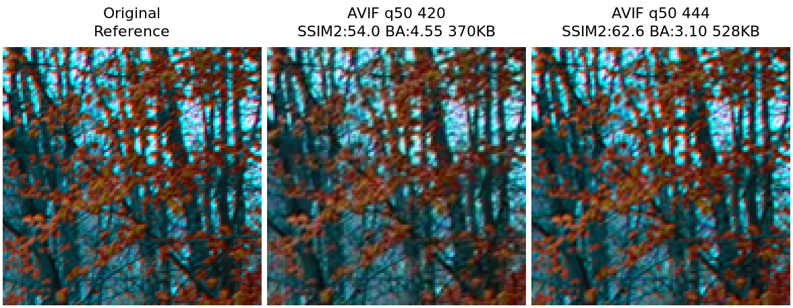
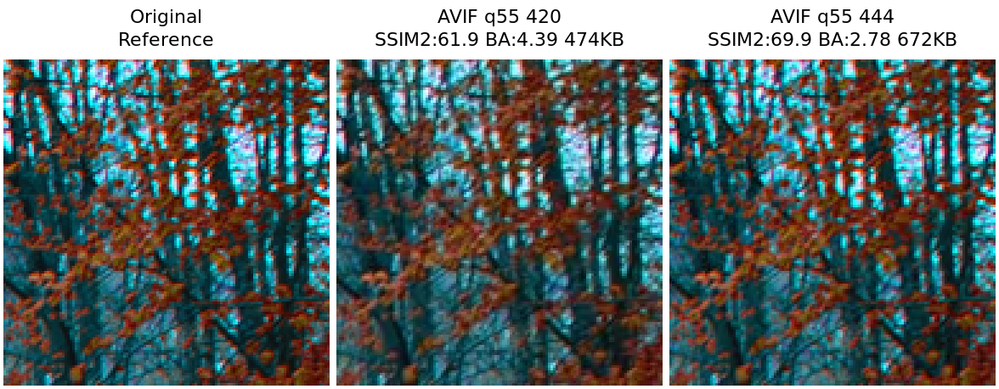
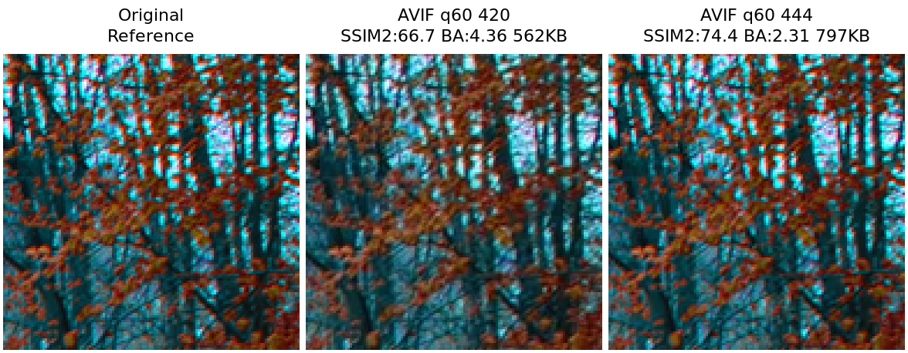
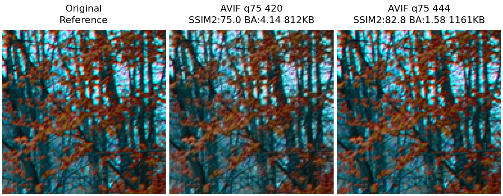
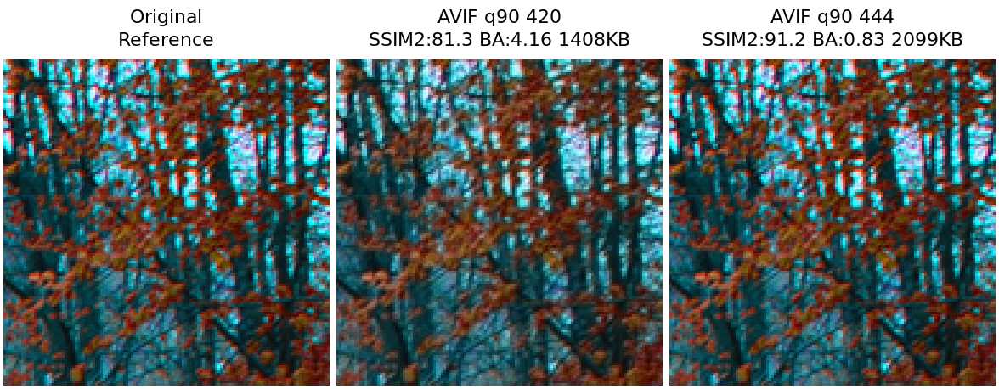
Distortion Map Comparison
Per-variant Butteraugli distortion maps shown as viridis heatmaps at uniform scale (darker = higher distortion). Reveals where each encoder concentrates its errors.


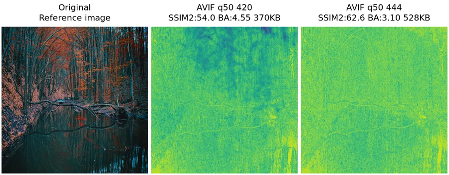
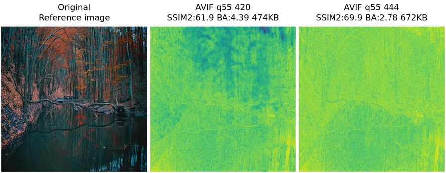


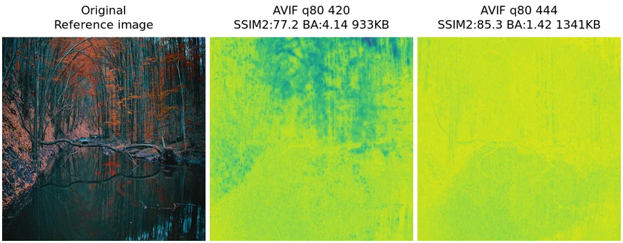

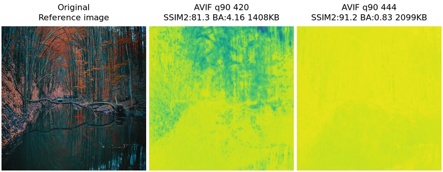
Parameter Sensitivity Analysis
Identifies the image and fragment where the choice of parameters has the greatest impact on quality. The map shows the variance of distortion values — bright regions indicate areas where some parameter settings produce much worse results than others.
Selected Image & Fragment Location
The dashed rectangle marks the fragment used for the comparisons below.
Distortion Variance Map
Per-pixel variance of Butteraugli distortion. Bright regions show where quality varies most with parameter changes; the selected fragment targets the area of highest sensitivity.
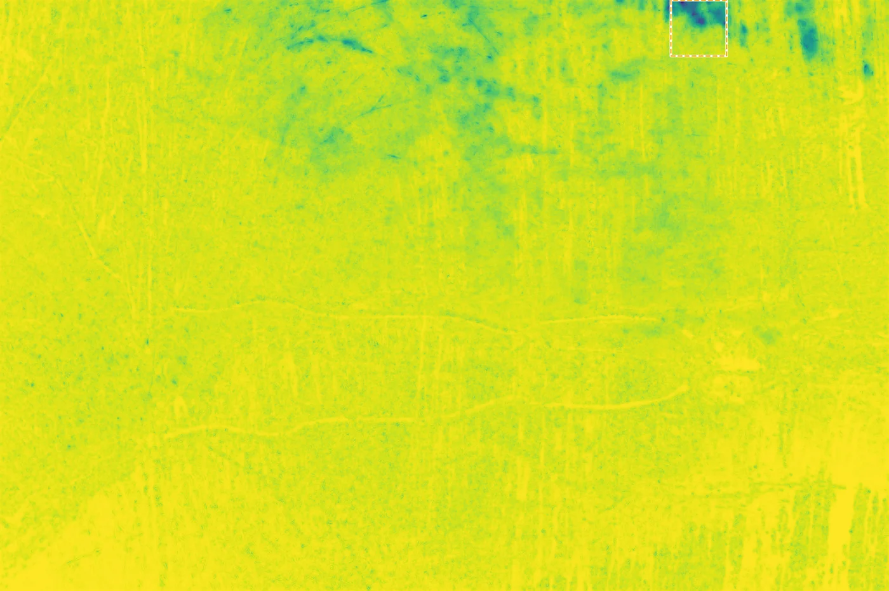
Fragment Comparison
Nearest-neighbour 3× zoom of the selected fragment, comparing original against each encoding variant. Images are served losslessly to preserve pixel fidelity.
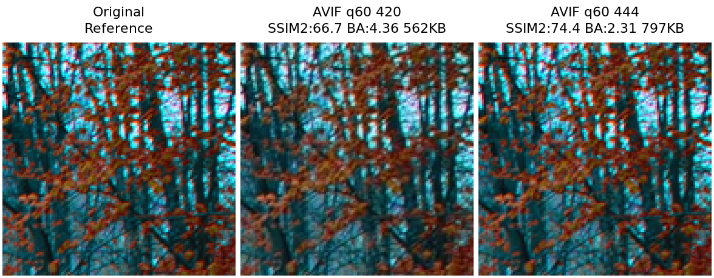
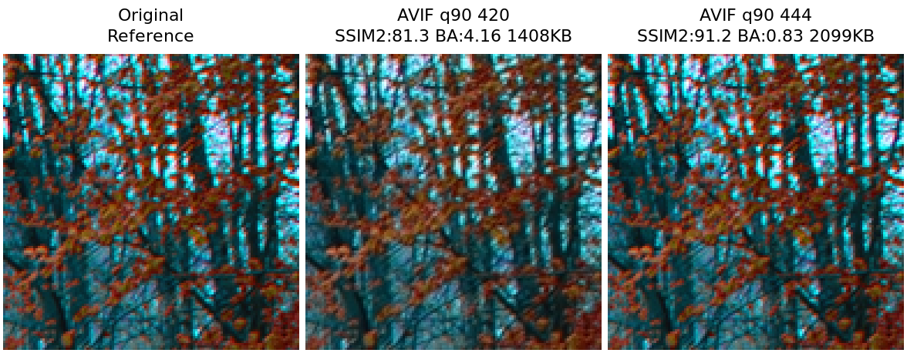
Distortion Map Comparison
Per-variant Butteraugli distortion maps shown as viridis heatmaps at uniform scale (darker = higher distortion). Reveals where each encoder concentrates its errors.
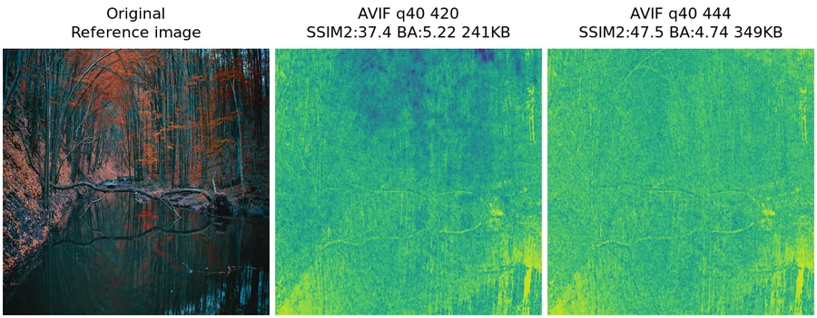
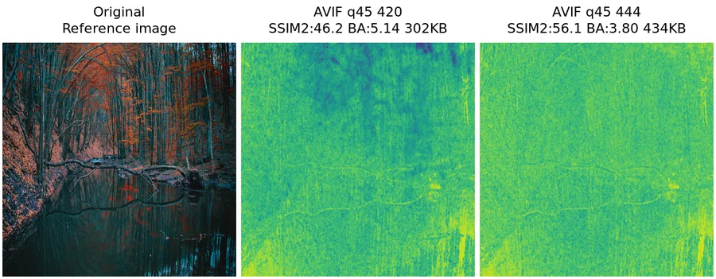


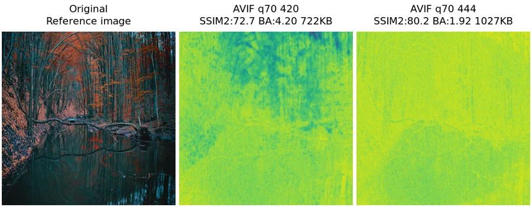

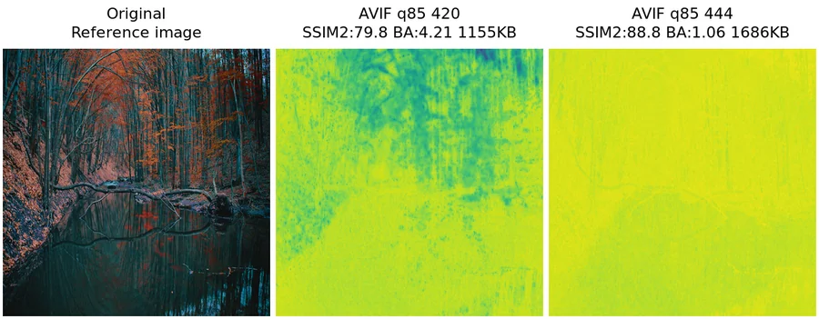

Static SVG Figures
Downloadable vector graphics for use in papers, presentations, or offline analysis.
- avif-chroma-subsampling_ssim_vs_quality.svg
- avif-chroma-subsampling_ssimulacra2_vs_quality.svg
- avif-chroma-subsampling_bytes_per_pixel_vs_quality.svg
- avif-chroma-subsampling_encoding_time_per_pixel_vs_quality.svg
- avif-chroma-subsampling_bytes_per_psnr_per_pixel_vs_quality.svg
- avif-chroma-subsampling_bytes_per_ssim_per_pixel_vs_quality.svg
- avif-chroma-subsampling_psnr_vs_bytes_per_pixel.svg
- avif-chroma-subsampling_ssim_vs_bytes_per_pixel.svg
- avif-chroma-subsampling_psnr_vs_quality.svg
- avif-chroma-subsampling_butteraugli_vs_bytes_per_pixel.svg
- avif-chroma-subsampling_butteraugli_vs_quality.svg
- avif-chroma-subsampling_bytes_per_ssimulacra2_per_pixel_vs_quality.svg
- avif-chroma-subsampling_bytes_per_butteraugli_per_pixel_vs_quality.svg
- avif-chroma-subsampling_ssimulacra2_vs_bytes_per_pixel.svg
{kind=link}
{kind=link}
{kind=link}
{kind=link}
{kind=link}
{kind=link}
{kind=link}
{kind=link}
{kind=link}
{kind=link}
{kind=link}
{kind=link}
{kind=link}
{kind=link}